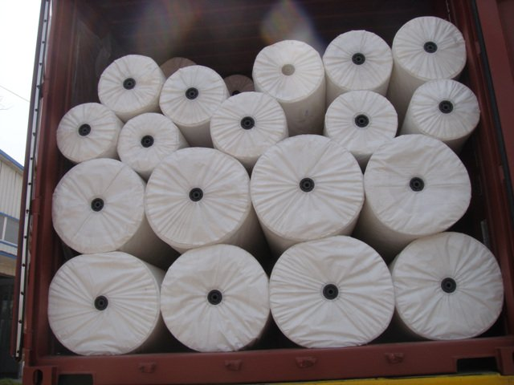
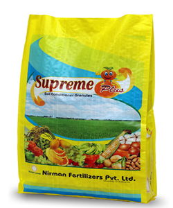
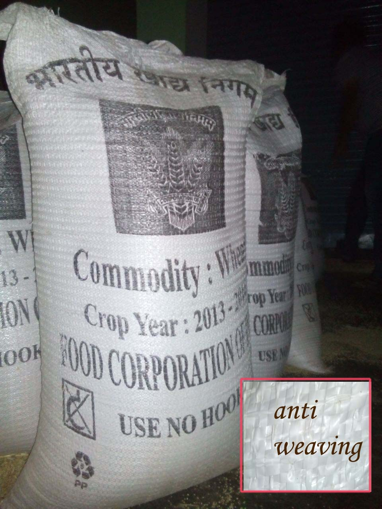
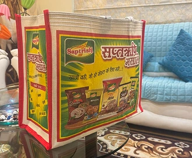
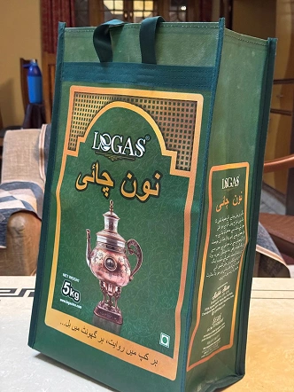
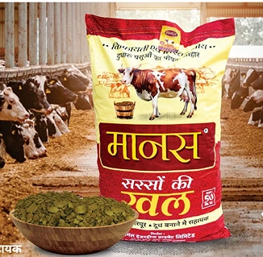

PRODUCTS

PP Woven bag with liner
Woven polypropylene bags or simply woven PP bags are considered to be the toughest packaging bags, widely used to pack materials for grain, milling and sugar industry. Additionally, these bags also find wide application in fodder industry, chemicals and fertilizers industry besides cement industry and other applications like sand, metal parts and concrete etc..

PP Woven Gusseted Bags
Gusseted bags Are specially made for different applications, it is convenient for higher stacking purpose due to the shape and design slippage can also be minimised.

PP WOVEN FABRIC ROLL
Rolls of different colors and shades of PP and HDPE Woven circular fabrics are available to make the width and other specifications as per clients' requirements. They are put to direct uses or for conversion to Bags/Sacks at customers' end..

PP WOVEN Bags
Woven polypropylene bags or simply woven PP woven bags are considered to be the toughest packaging bags widely used to pack materials for grain, milling and sugar industry We offer 100% custom designed polypropylene woven bags as per the required specifications of the customers .

BOPP Bags
Bopp woven multi-color bags & sacks have become the most popular high growth films in the world market.
Feature
Weight less than traditional paper bags, which reduces freight costs
Strong, puncture & tear resistant, which reduces shrinkage from broken paper bags
Moisture proof
100% recyclable
High Gloss & Matte Finish

PP WOVEN WRAPPING FABRIC
We are involved in manufacturing, supply and export of PP wrapping fabric of low GSM. Further, these fabrics are available in the width of 36 cms to 120 cms circular or double in single sheets or more with middle joint. We also welcome the customized orders to meet the specific requirements of our clients..

PP Woven Cement Bags
We are majorly in the manufacture of cement bags. These valve type Bags are produced in accordance with the specifications of the customer. Printing on the bags are done according to the art work supplied by the customers.
Size = Length 710 mm, Width 480mm with self-closing valve, Weight 70-75 gms per bag Printed with flexo printing for packing 50.0 kgs as per IS - 11652 - 1986
PP Woven Anti Slip Bags
We offer PP Woven Ground Covers which provides a perfect solution for controlling weed growth. It prevents the weeds to grow and yet let water and nutrients pass through. Our fabric is UV stabilized and lasts even in direct sunlight. Our product usually has marker lines every 12". These lines can be at more or less intervals

Laminated Bags
We manufacture laminated PP bags using excellent quality material based on latest machinery and techniques. These bags are ideal for the storage of various agricultural products and food grains. These bags are highly appreciated in the market due to their features such provide extra protection from external elements for more safety and security. These bags are highly durable and have longer service life.

Knotted Bags
We manufacture PP woven Knotted bags for packaging solution.Bag types like as a bundle packaging. VPPL has a Speciality in manufacturing of this product.
Two types available Cotton bale & West Bale. Use for type of packaging as Cable packaging , Coper Packaging and other types as well as Cable Manufacturing and Coper Manufacturing Industries etc.
Size: Cotton Size : 8'*8'
Coper Pack Size - 84'98'8

Sugar Bags
We manufacture Sugar bags using excellent quality material.Suitable packaging as per the customized need, be it open mouth Or top hemmed
Bottom Stitched with inside separate loose liner bag of 25 micron thickness stitched at bottom and printed with flexo.
Size = Length 900 mm, Width 590 mm
Open Mouth Or Top Hemmed

Mineral Bags
We manufacture Mineral bags using excellent quality material based on latest machinery and techniques. These bags are made from lower GSM fabric. Bags are made in different size according to the need of the customers. Printing is also done according to the art work provided by the customers..

Canvas Promotion Bag
A canvas promotional bag is a durable, eco-friendly tote made from natural fabric, ideal for branding and everyday use. It offers a spacious design for carrying essentials while showcasing your logo or message in a stylish, reusable way—perfect for events, gifting, and sustainable promotions.

Non Woven Promotion Bag
A non-woven promotional bag is a lightweight, cost-effective, and eco-friendly alternative to plastic bags. Made from recyclable polypropylene fabric, it is durable enough for daily use and ideal for carrying groceries, gifts, or documents. With ample space for custom printing, non-woven bags are perfect for brand promotions, events, and corporate giveaways while supporting sustainable practices.

BOPP Mustard Cake Bag
BOPP Mustard Cakes Bags are high-quality laminated packaging bags designed for the safe storage and transportation of mustard oil cake. Made from durable BOPP (Biaxially Oriented Polypropylene) material, these bags offer excellent moisture resistance, tear strength, and long-lasting performance.